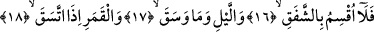
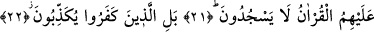

ONLAR ACABA
NEDEN İMAN ETMEZLER?
16. Hayır! Şafağa,
17. Geceye ve onda basan karanlığa,
18. Dolunay olmuş aya yemin ederim ki,
19. Halden hale geçersiniz.
20. Böyleyken onlar acaba neden îman etmezler?
21. Onlar kendilerine Kur’an okununca secde de etmezler.
22. Aksine, kâfirler yalanlıyorlar.
23. Halbuki Allah onların gizlediği şeyleri çok iyi bilir.
24. (Rasûlüm!) Onlara acı azabı müjdele!
25. İman edip sâlih amel işleyenler başkadır; onlar için arkası kesilmeyen bir
mükâfat vardır.
“Hayır, şafağa...” Âyette yer alan “la” daha önce birçok kez geçtiği üzere tevkidin
yâni pekiştirmenin sılasıdır. Bu son grup âyette birtakım nesneler üzerine yemin
ediliyor. Bunlardan ilki “şafak”tır. Şafak; güneşin batmasından ve kaybolmasından
sonra batı ufkunda görülen kızarıklığın adıdır. Âlimlerin ekserisine göre şafağın
kaybolmasıyla akşam namazının vakti çıkıp, yatsı namazının vakti girer. Bazı âlimlere
göre şafak bu kızarıklık değil, onu izleyen beyazlıktır. Dolayısıyla yatsı namazı bu
beyazlık kaybolmadıkça girmez. Bir grup da bu beyazın asla gâib olmadığına belki bir
ufuktan başka bir ufka gittiğine kanidir.
Bu mesele daha önce Müzzemmil sûresinde açıklanmıştı. Yatsı namazının vaktinin,
beyazlığın kaybolmasından sonra gireceği meselesi Ebû Hanife’den gelen iki rivâyetten
birisidir. Bazılarına göre Ebû Hanife daha sonra bu görüşünden dönmüştür. Bundan
dolayı fetva birinci görüşe göre verilir. Yani batı ufkundaki kızarıklık kaybolunca yatsı
namazının vakti girer. Bu görüş Hanefi mezhebinde imameynin ve başka imamların
görüşüdür. Şafağa şafak denmesi -her iki mânâyı göz önüne alarak söylüyoruz- rikkat
yâni inceliğinden dolayıdır. Fakat kelimenin beyazlık mânâsıyla olan münasebeti daha